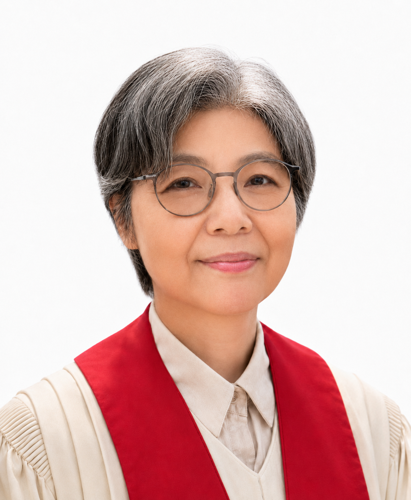

Sunday Worship
주일 오전 11시 쉬고 듣는 예배
예배는 성취해야 할 일이 아니라 하나님 앞에서 다시 숨을 고르는 시간입니다. 말씀과 침묵, 기도와 교제 안에서 한 주의 삶을 다시 받아들입니다.
Clear Spring Church
하나님의 현존 안에서
함께 놀고 듣고 쉬는 공동체
서울 서대문 충정로에 있는 맑은샘교회는 바쁜 일상 속에서 잠시 멈추어 말씀을 듣고, 기도 안에서 삶을 비추며, 서로의 걸음을 조용히 돌보는 공동체입니다.
기도는 삶에서 도망치는 시간이 아니라, 삶을 있는 그대로 하나님께 가져가는 시간입니다.
Vision
서대문 맑은샘교회는 기독교대한감리회 서울연회 서대문지방에 속한 교회로, 1995년 설립되어 현재 홍보연 목사님이 담임하고 있습니다. 맑은샘교회는 지역사회와 시민사회, 청년·생명·평화 운동의 현장과 함께하기를 바라며 환대의 가치를 지향합니다.
교회 안팎의 성평등·인권·생명·평화 의제에 관심을 가지고 살아가는 신앙인으로 성숙하는 공동체가 되길 바라며, 다양한 모임과 연대 활동의 공간이 되고자 합니다.
People

맑은샘교회 담임목사.
(전) 기독교대한감리회 양성평등위원회 공동위원장
(전) 감리교여성지도력개발원장
(현) 기독교반성폭력센터 공동대표
기독정신역동 상담가
한국샬렘영성훈련원의 영적 동반가(Spiritual Direction)
Meditation
말씀 앞에 머문 기록, 기도 중에 떠오른 질문, 삶에서 발견한 작은 통찰을 나눕니다.
묵상 글 보기Resources
예배, 영성 훈련, 독서 나눔에 필요한 자료를 차곡차곡 모읍니다.
자료실 보기Gatherings
각자의 삶에서 하나님이 어떻게 일하시는지 함께 듣고 분별합니다.
책과 말씀, 침묵과 대화를 통해 마음에 남는 문장을 나눕니다.
각자의 관심과 기쁨을 통해 창조성과 영성을 새롭게 발견합니다.
개인의 삶과 기도 여정을 존중하며 정기적으로 동행합니다.
모임과 영적동반 신청은 일정 확인 뒤 순차적으로 안내합니다.
만남, 경청, 분별, 실천의 과정을 천천히 함께 걸어갑니다.
For Visitors
처음 방문하셔도 조용히 앉아 예배에 참여하실 수 있습니다. 필요한 안내는 예배 전후에 편안하게 도와드립니다.